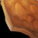
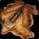
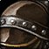

Übersicht
Kürschnerei + Lederverarbeitung. Du sammelst den Großteil deiner Materialien während des normalen Levelns selbst.
Besonders stark für Jäger, Schurke, Druide und Schamane, weil sie die selbst hergestellte Leder-/Kettenrüstung direkt nutzen können.
Über 280 neue Rezepte, neue Rüstungsfamilien, Rüstungssets, Taschen sowie Camping-Gegenstände.
Bei 150, 225 und 300 Lederverarbeitung bekommst du jeweils einen Legacy-Punkt.
Ränge
| Rang | Skill-Cap | Benötigter Skill | Charakterlevel |
|---|---|---|---|
| Lehrling | 75 | — | — |
| Geselle | 150 | 50 | 10 |
| Experte | 225 | 125 | 20 |
| Fachmann | 300 | 200 | 35 |
Effizienteste Schnellroute
| Skill | Rezept | Crafts | Material | Hinweis | Status |
|---|---|---|---|---|---|
| 1–30 |  Leichtes Leder | 33 | 100 Verdorbene Lederfetzen | Alternativ Light Armor Kit mit 1 Leichtem Leder pro Craft. | getestet |
| 30–55 |  Geschmeidiger leichter Balg | 27 | 27 Leichter Balg + 27 Salz | 24 davon für Leichte Lederhose aufheben. | getestet |
| 55–75 | 21 | 63 Leichtes Leder + 42 Grober Faden | Geselle rechtzeitig bei Skill 50 lernen. | getestet | |
| 75–80 | Mittleres Leder | 8 | 32 Leichtes Leder | Zwischenmaterial. | getestet |
| 80–90 | Geschmeidiger mittlerer Balg | 10 | 10 Mittlerer Balg + 10 Salz | Alle 10 für Dunkler Ledergürtel aufheben. | getestet |
| 90–100 | 19 | 114 Leichtes Leder + 38 Grober Faden | 10 Gürtel aufheben. | getestet | |
| 100–115 | 24 | 240 Leichtes Leder + 24 Geschmeidiger leichter Balg + 24 Feiner Faden | — | getestet | |
| 115–125 | 10 | 10 Feiner Ledergürtel + 10 Geschmeidiger mittlerer Balg + 20 Feiner Faden + 10 Grauer Farbstoff | — | getestet | |
| 125–130 | Schweres Leder | 7 | 35 Mittleres Leder | — | getestet |
| 130–140 | Geschmeidiger schwerer Balg | 20 | 20 Schwerer Balg + 60 Salz | Nur wenn Heavy-Hide-Route günstiger ist. | getestet |
| 140–155 | 20 | 280 Mittleres Leder + 80 Feiner Faden | — | getestet | |
| 155–165 |  Barbarische Schultern | 10 | 80 Schweres Leder + 10 Geschmeidiger schwerer Balg + 20 Feiner Faden | — | getestet |
| 165–175 | 10 | 40 Schweres Leder + 10 Geschmeidiger schwerer Balg + 10 Seidenfaden | — | getestet | |
| 175–195 | 26 | 104 Schweres Leder + 26 Geschmeidiger schwerer Balg + 26 Seidenfaden | — | getestet | |
| 195–210 | Nightscape Headband | 21 | 105 Dickes Leder + 42 Seidenfaden | — | getestet |
| 210–225 | 15 | 210 Dickes Leder + 60 Seidenfaden | Artisan-Trainer-Rezept; aktueller Beta-Abschluss. | getestet | |
| 225–300 | — | — | WoW-Professions kennzeichnet diesen Bereich noch als nicht getestet. | vorläufig |
Materialien 1–225
Alternative: 60× Leichtes Leder
oder die dokumentierte Heavy-Leather-Alternative
Salz, Faden und Farbstoff erst beim Händler kaufen.
Lederverarbeitungslehrer
Randal Worth
Sturmwind · Altstadt
67.4, 49.4Gretta Finespindle
Ironforge · Große Schmiede
39.0, 32.4Darianna
Darnassus · Terrasse der Handwerker
64.4, 21.2Adele Fielder
Wald von Elwynn · Goldhain
46.4, 62.2Simon Tanner
Sturmwind · Altstadt
ca. 71, 62Fimble Finespindle
Ironforge · Große Schmiede
ca. 40, 32Faldron
Darnassus · Terrasse der Handwerker
ca. 64, 21Telonis
Darnassus · Terrasse der Handwerker
64.4, 21.4Drakk Stonehand
Hinterland · Aerie Peak / Wildhammerfeste
13.4, 43.4Kamari
Orgrimmar · Das Tal der Ehre/Drag
63.0, 45.0Chaw Stronghide
Mulgore · Bloodhoof Village
ca. 45, 57Shelene Rhobart
Tirisfal · südöstlich von Brill
ca. 65, 60Karolek
Orgrimmar · The Drag
ca. 60, 54Arthur Moore
Undercity · Rogues' Quarter
ca. 70, 58Tarn
Thunder Bluff · Middle Rise
ca. 40, 42Una
Thunder Bluff · Middle Rise
41.4, 42.6Hahrana Ironhide
Feralas · Camp Mojache
74.4, 43.0Forever-spezifische Systeme
Neue Muster werden über Merchant’s Favor gekauft, den du u. a. durch Waylaid Supply Crates sammelst. Kaufe zuerst Muster, die deinem Charakter wirklich Upgrades bringen.
Daniel Stitchsong bei Three Corners im Rotkammgebirge, ungefähr 10, 72.
Pawani außerhalb des Crossroads im Brachland, ungefähr 49.6, 29.6.
Lagerzelt ab 20 Lederverarbeitung, Gerbrahmen ab 140, Nähmaschine ab 300. Der Gerbrahmen/Nähmaschine dienen als Crafting-Station.
Neue Rüstungsfamilien
| Skill | Beispiel | Quelle |
|---|---|---|
| 60 | Brawler's / Defender's / Trapper's Ledergürtel | Merchant’s Favor |
| 75 | Handschuhe der frühen Sets | Merchant’s Favor |
| 100 | Trapper's Leather Hood u. a. | Merchant’s Favor oder Dungeon |
| 110 | Tuniken | Merchant’s Favor |
| 125 | Beinschutz | Merchant’s Favor oder Dungeon |
| 130 | Helme | Berufslehrer |
| 175+ | Prowler / Mender / Skulker / Skirmisher u. a. | höhere Muster |
Spezialisierungen
Drachenschuppen
Fokus auf Kettenrüstung und Drachenschuppen. Traditionell besonders interessant für Jäger und Schamanen.
Allianz: Peter Galen · Azshara
Horde: Thorkaf Dragoneye · Ödland
Elementar
Fokus auf Lederrüstung mit Elementarmaterialien; eher für physische Leder-DPS und spezielle Widerstands-/Damage-Items.
Allianz: Sarah Tanner · Sengende Schlucht
Horde: Brumn Winterhoof · Arathihochland
Stammeslederverarbeitung
Fokus auf besondere Lederrüstung; traditionell interessant für Druiden und Schurken.
Allianz: Caryssia Moonhunter · Feralas
Horde: Se'Jib · Schlingendorntal